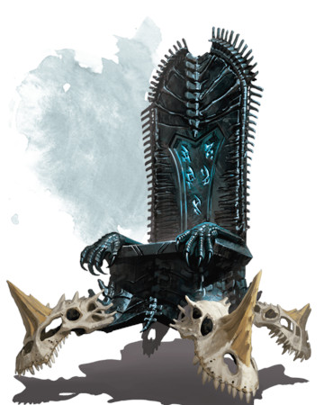

Trône des crânes de dragons
[ Throne ]
Objet merveilleux, artéfact
Construit par des dieux nains et confié aux souverains du Shanatar, un ancien empire nain, le Trône des crânes de dragons fut un symbole de la puissance et de la fierté des nains durant des âges incalculables. Le trône plane à 30 cm du sol et est une chose massive faite d'obsidienne polie avec des pieds surdimensionnés - les crânes empalés de quatre anciens dragons bleus. Des runes scintillent dans l'obsidienne sculptée, qui prennent vie sous forme d'une énergie bleue lorsque les pouvoirs du trône sont activés. Après la chute du Shanatar, le Trône des crânes de dragons est tombé entre les griffes de créatures moins honorables. Une bande d'aventuriers ont arraché le trône au tyran elfe aquatique Gantar Kraok et l'a vendu à la géante des tempêtes Neri pour une somme considérable. Neri agrandit le trône magiquement et le donna à son mari, le roi Hékaton, en cadeau, ainsi que l'un des Sceptres des régnants du Shanatar, qu'elle avait trouvé dans une épave au fond de la Mer inviolée. Seule une créature liée à un Sceptre des régnants et qui l'a en sa possession peut exploiter les pouvoirs du Trône des crânes de dragons, qui est devenu la pièce maîtresse de la salle du trône du roi Hékaton dans la citadelle sous-marine du Maelstrom. La peur du pouvoir du trône a aidé à empêcher les géants maléfiques de défier ou de menacer le leadership d'Hékaton.
Toute créature non liée à un Sceptre des régnants qui s'assoit sur le trône est paralysé et enfermé dans un champ de force. Lorsqu'elle est enfermée, la créature ne peut pas être touchée ou déplacée du trône. Toucher avec un Sceptre des régnants le champ de force le dissipe, bien que la créature reste paralysée jusqu'à ce qu'elle soit séparée du trône. Toute créature assise sur le trône peut entendre un faible chuchotement en draconique - les chuchotements des quatre dragons bleus dont les crânes ornent le trône. Bien qu'impuissants, ces esprits essaient d'influencer les décisions du maître du trône.
Propriétés du Trône. Le trône possède 9 charges et récupère toutes les charges dépensées chaque jour à l'aube. Une créature qui s'assoit sur le trône tout en étant lié à un Sceptre des régnants en sa possession peut exploiter les propriétés du trône, qui sont les suivantes :
• Le trône gagne une vitesse de vol (stationnaire) de 9 mètres et peut voler où la créature le souhaite. Cette propriété ne dépense aucune charge.
• Le trône et la créature assise dessus peuvent se déplacer à travers la terre et la pierre sans déranger la matière qu'ils traversent. Cette propriété ne dépense aucune charge.
• Par une action, la créature peut dépenser 1 charge pour lancer éclair (jet de sauvegarde contre les sorts DD 19) depuis le trône. Le sort est lancé comme s'il utilisait un emplacement sort de niveau 9 et inflige 49 (14d6) dégâts de foudre. L'éclair est émis de la bouche d'un des crânes de dragons bleus du trône.
• Par une action, la créature peut dépenser 2 charges pour lancer globe d'invulnérabilité depuis le trône. Le globe renferme à la fois la créature et le trône.
• Par une action, la créature peut dépenser 3 charges pour créer l'image spectrale d'un dragon bleu ancien qui l'entoure ainsi que le trône. Le dragon spectral dure 1 minute. À la fin de chacun des tours de la créature, le dragon spectral effectue une attaque de morsure et deux attaques de griffes contre des cibles au choix de la créature. Ces attaques ont les mêmes bonus d'attaque, d'allonge et de dégâts que la morsure et les griffes d'un dragon bleu ancien.
Détruire le trône. Le Trône des crânes de dragons peut être détruit en y brisant dessus au moins cinq Sceptres des régnants du Shanatar simultanément. Cela n'a jamais été dit ou chanté par les nains, bardes et autres conteurs, et ne peut pas être découvert par un jet de caractéristique. Les personnages qui veulent détruire le trône doivent partir en quête pour découvrir cette méthode. La destruction du trône déclenche une explosion, sous forme d'éclats d'obsidienne qui s'envolent dans toutes les directions. Chaque créature et objet dans une sphère de 9 mètres de rayon centrée sur le trône doit réussir un jet de sauvegarde de Dextérité DD 21, subissant 70 (20d6) dégâts tranchants en cas d'échec, ou la moitié de ces dégâts en cas de réussite.
Toute créature non liée à un Sceptre des régnants qui s'assoit sur le trône est paralysé et enfermé dans un champ de force. Lorsqu'elle est enfermée, la créature ne peut pas être touchée ou déplacée du trône. Toucher avec un Sceptre des régnants le champ de force le dissipe, bien que la créature reste paralysée jusqu'à ce qu'elle soit séparée du trône. Toute créature assise sur le trône peut entendre un faible chuchotement en draconique - les chuchotements des quatre dragons bleus dont les crânes ornent le trône. Bien qu'impuissants, ces esprits essaient d'influencer les décisions du maître du trône.
Propriétés du Trône. Le trône possède 9 charges et récupère toutes les charges dépensées chaque jour à l'aube. Une créature qui s'assoit sur le trône tout en étant lié à un Sceptre des régnants en sa possession peut exploiter les propriétés du trône, qui sont les suivantes :
• Le trône gagne une vitesse de vol (stationnaire) de 9 mètres et peut voler où la créature le souhaite. Cette propriété ne dépense aucune charge.
• Le trône et la créature assise dessus peuvent se déplacer à travers la terre et la pierre sans déranger la matière qu'ils traversent. Cette propriété ne dépense aucune charge.
• Par une action, la créature peut dépenser 1 charge pour lancer éclair (jet de sauvegarde contre les sorts DD 19) depuis le trône. Le sort est lancé comme s'il utilisait un emplacement sort de niveau 9 et inflige 49 (14d6) dégâts de foudre. L'éclair est émis de la bouche d'un des crânes de dragons bleus du trône.
• Par une action, la créature peut dépenser 2 charges pour lancer globe d'invulnérabilité depuis le trône. Le globe renferme à la fois la créature et le trône.
• Par une action, la créature peut dépenser 3 charges pour créer l'image spectrale d'un dragon bleu ancien qui l'entoure ainsi que le trône. Le dragon spectral dure 1 minute. À la fin de chacun des tours de la créature, le dragon spectral effectue une attaque de morsure et deux attaques de griffes contre des cibles au choix de la créature. Ces attaques ont les mêmes bonus d'attaque, d'allonge et de dégâts que la morsure et les griffes d'un dragon bleu ancien.
Détruire le trône. Le Trône des crânes de dragons peut être détruit en y brisant dessus au moins cinq Sceptres des régnants du Shanatar simultanément. Cela n'a jamais été dit ou chanté par les nains, bardes et autres conteurs, et ne peut pas être découvert par un jet de caractéristique. Les personnages qui veulent détruire le trône doivent partir en quête pour découvrir cette méthode. La destruction du trône déclenche une explosion, sous forme d'éclats d'obsidienne qui s'envolent dans toutes les directions. Chaque créature et objet dans une sphère de 9 mètres de rayon centrée sur le trône doit réussir un jet de sauvegarde de Dextérité DD 21, subissant 70 (20d6) dégâts tranchants en cas d'échec, ou la moitié de ces dégâts en cas de réussite.
Adventures (Storm King's Thunder)
